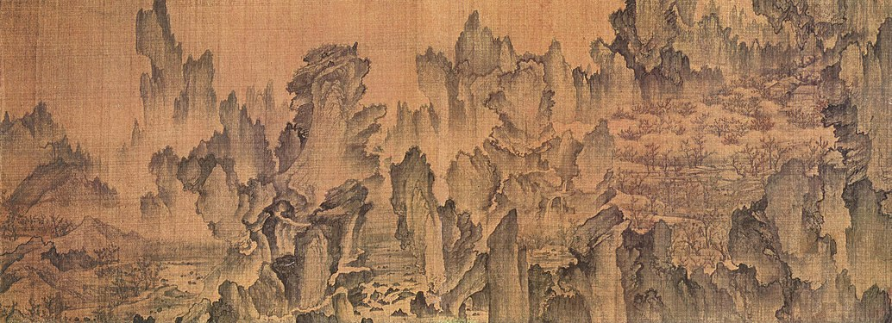
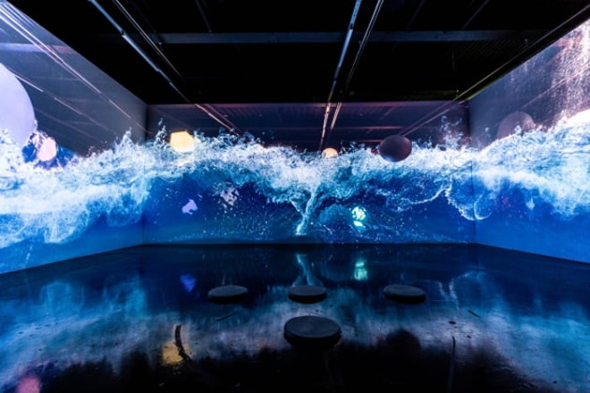

한국의 미술은 한반도 및 주변 지역에서 발생했던 미술을 말한다. 고분벽화, 불화, 문인화, 산수화 같은 평면 시각매체 예술과, 불상, 석탑, 도자기 같은 입체 시각매체 예술을 포함한다.
한국 미술사에서 미술은 서예같은 다른 시각예술이나, 궁궐, 한옥같은 건축 예술, 시조, 향가와 같은 문학 예술, 판소리, 탈춤과 같은 공연 예술과 연관을 맺으며 발전해왔다.

이후 대한제국과 일제강점기를 거치면서 서양회화, 사진, 영화 등이 들어왔다. 광복 이후 산업화 과정을 거치면서 방송이 시작되었고, 이에 대응해 현대미술계에서는 비디오아트가 시도되었다. 80년대 이후부터 인터넷 등의 신기술이 보급되기 시작하면서 미디어아트가 소개되기 시작하였다.
